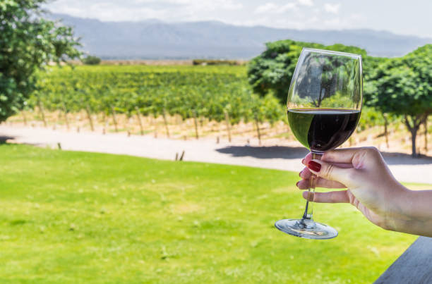

While the origins of the Shiraz grape are debated, the production of the Shiraz grape dates back to the Medieval period but was popularised further in the 19th century when exported to Australia, where the development of Syrah (of the same grape variety) increased, producing subtle but brilliantly bold and intensely fruity reds.
The Shiraz grape has become internationally renowned and is very popular with wine producers across Italy, from Tuscany to Sicily. It is more often cultivated in central and southern Italy, producing better results in warmer regions.
Shiraz wines simulate flavours from pepper, spice and sweet red fruit. With its rich soil, proximity to Lake Trasimeno and ideal temperate ranges, one of the stand-out Italian Shiraz regions is the Cortana. These intense but elegant reds compete with the best of Shiraz worldwide and have great ageing potential.
Shiraz can produce complex wines capable of ageing and improving over many decades. In the vintage versions of Shiraz, the deep reds also contain purple-red nuances, which often become more spiced with age, while younger Shirazs can be more floral and fruitier.
Shiraz is an extremely useful blending grape. Due to its front-loaded style, Shiraz is often blended with grapes that add more mid-palate, such as Cabernet Sauvignon, to help make the wine taste more complete.
In the southern Rhône, it is common for Shiraz to be blended with any combination of Grenache, Mourvèdre, Carignan and Cinsault, among others, whilst in the New World regions of Australia and California, Shiraz-Viognier blends are an increasingly common combination.
In Italy, the 'Supertuscan' wines are shaking up the wine establishment. Coined in the 1980s, this is the term used to describe Tuscan red blends which used grapes not native to Italy, including the Shiraz, but also Merlot and Cabernet Sauvignon.
This has continued to grow in popularity beyond Tuscany, with many Sicilian wines also producing similar blends to add body and elegance to their Shiraz wines.
The adage of what grows together, goes together, certainly rings true for Italian Shiraz wines, pairing well with Tuscan and Sicilian cuisine in particular. The spice of Shiraz pairs best with foods that are robust and flavourful which all work well with the medium to high tannins of Shiraz.
As with any pairing, it is best to match the wine's weight and flavour intensity with that of the food. The boldness of a Shiraz would overpower delicate cheese flavours, so it is best to go for strong flavours, like blue cheeses, or if you're looking for Italian cheese, a Val di Chiana works perfectly.